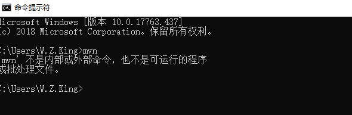
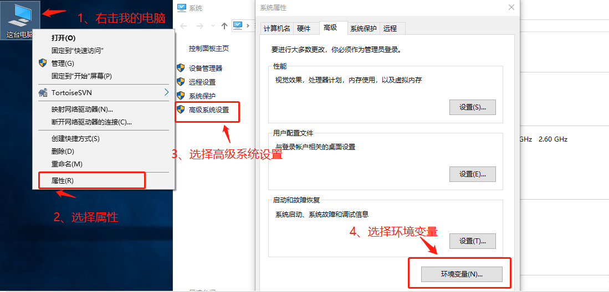
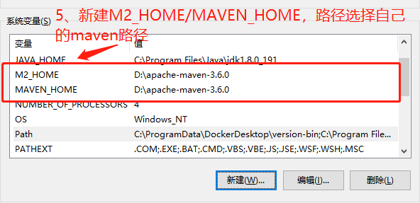
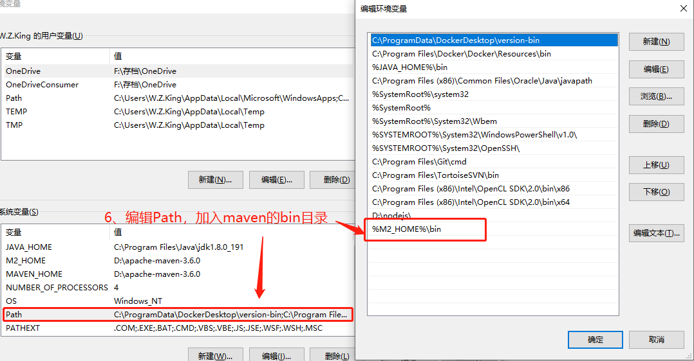
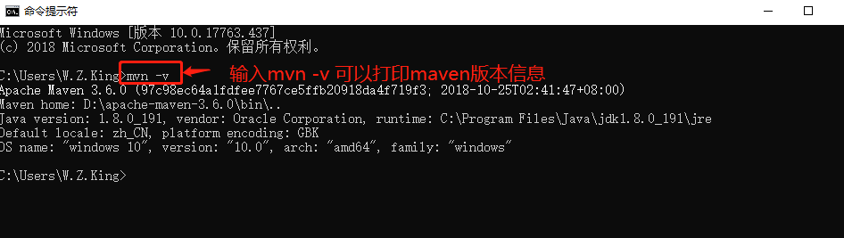
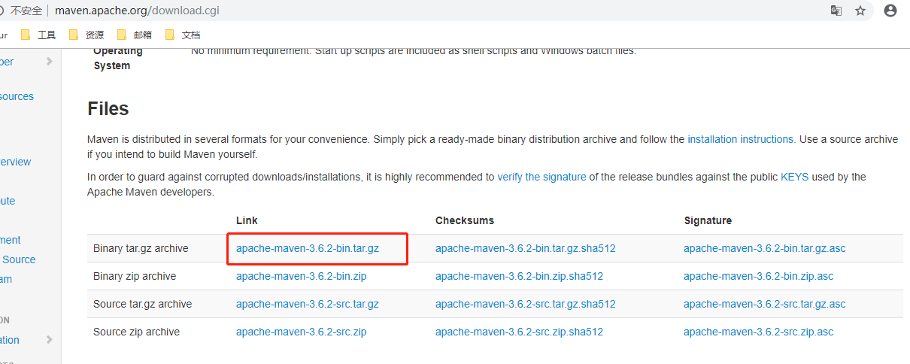
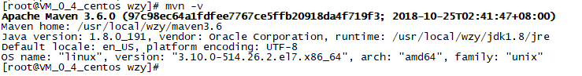

=使用mvn命令前需要配置环境变量，否则系统无法识别命令





官网下载：http://maven.apache.org/download.cgi ，需要下载已编译的tar.gz格式的压缩包

我使用的是SecureFX，支持拖拽上传，比较方便。
解压： tar -zxvf apache-maven-3.6.2-bin.tar.gz重命名： mv apache-maven-3.6.2 maven3.6.2vim /etc/profileM2_HOME=/usr/local/wzy/maven3.6
PATH=$JAVA_HOME/bin:$M2_HOME/bin:$PATH
export HISTTIMEFORMAT JAVA_HOME PATH M2_HOMEsource /etc/profilemvn -v出现版本信息即代表配置成功
